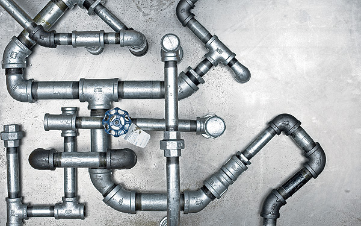
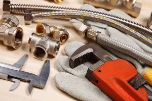

Mecanergie Inc. offers complete plumbing, heating and air-conditioning
services in Montreal. Our team of technicians are trained to act quickly
and effectively in residential, commercial and industrial settings.
Personalized service and consideration for our clients are at the heart of
Mecanergie Inc.
A team of certified technicians at your service

Air conditioning and ventilation, plumbing and heating: from
installation to regular maintenance, our team of plumbing, heating and
air-conditioning technicians are here to answer your needs. We have
emergency service available 24/7 for situations requiring immediate
attention including unclogging drains and water leaks. To make an
appointment, please call our office at the phone number above.
About us
Founded in 1979, Mecanergie Inc. has earned an excellent reputation for
its work and the personal service it provides customers throughout the
Greater Montreal area. Mecanergie is a member of the CMMTQ, RBQ, ACQ, CCQ
and CETAF.
Our Services

Mecanergie’s certified technicians are trained to repair all types of
plumbing, heating, ventilation and air-conditioning systems. We
install and maintain systems on commercial sites in industrial
buildings and private residences. Please click on the link below for a
list of our services.
Contact us:
Mecanergie Inc.
7032 ch. de la Côte-des-Neiges, Montreal, QC H3S 2C1
Phone: (514) 739-2451
Business Hours:
Monday-Friday: 7:00 am to 5:00 pm
Saturday-Sunday: Closed